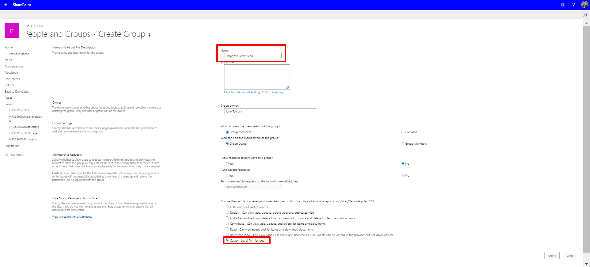

Employee Onboarding 365
Frequently Asked Questions

- To set up custom-level permissions, follow these steps:





These steps will help you grant custom-level permissions efficiently.
TEmployee on boarding software is a specialized tool designed to streamline and automate the process of integrating new employees into an organization. It facilitates the transition of new hires into their roles by managing and organizing various onboarding activities.
Yes, HR365 offers automation features for employee credential creation, saving time and reducing errors.
How do you count user license in employee onboarding 365 application. Any user who is onboarded using application, via bulk upload, HR, admin, hiring manager or any other roles who interact with application for approvals or any other activities, are counted towards user licenses. This application provides self-service for the onboarded employees, maintain their documents digitally and send reminders based on selected tasks and reminders.
This Software is the first communication an employee has with the organization soon after the long interview journey process and: Employee onboarding software can help streamline the process of onboarding new employees. This could save organization business time and money by reducing the amount of time taken and swifts to get a new employee up to initial phase and productivity. This software can help in ensuring that new employees receive the information they need in a consistent and organized manner. It helps in reducing confusion or frustration and ensure everyone is on the same page from the word start.
The software can help create a more standardized onboarding experience for all employees. It reduces the turnover and improve the internal employee satisfaction. Onboarding software can help you track the progress of each individual employee during the onboarding process. This information can be used to identify areas where employees are struggling and need additional support.
It can help to customize each employee’s onboarding experience based on their needs and preferences. This allows to creation a more personalized and effective onboarding experience for everyone involved. So, streamlining employees with the process is not only to impresses new employees however, also to reduces the workload of the HR team and other teams across the organization. To know more on how to set MS out of the box site collection templet for onboarding: Link
Yes, you can install multiple instances of the application as long as it is in one Microsoft 365 tenant and total number of users of all the instances installed remain within the user limit as per your plan or license you purchased.
To avoid last-minute confusion and compliance issues, we need to have a rock-solid employee onboarding process. Here’s what an efficient employee onboarding software or employee onboarding platform does: Gives a clearly outlined onboarding template Minimizes the made by paperwork Shortens the employee onboarding lifecycle Reduces manual intervention and human errors Lessens the workload of the HR team Provides a consistent experience to all new hires Injects transparency into the process flow Offers the employees a memorable onboarding experience.
First stepping stone: Releasing of offer The employee onboarding process starts soon after the recruitment process is completed. Once a candidate is selected, an HR team shares a warm welcome email with a few essential documents like the offer letter, new hire welcome packet, links to fill out digital employee onboarding forms, and policy documents. Reaction from the New hire: Offer Acceptance or denial Once the new hire accepts or denies the offer, as the best practice the organizations should schedule a quick call to review the digital employee onboarding forms, benefits, and policies, and set expectations. Keeping the new hires engaged will affirm their choice to accept the offer.
Upon receiving positive feedback on the offer, it is important to kick-start the employee orientation. Waiting period: Critical period It is very important to know if the new hire just accepted the offer, but it doesn’t promise that they’ll turn up for the date of joining. During the waiting period, the employee might be open to offers from other potential employers as well. So, it is very crucial for the organization to build a good rapport with the new hire. Let the new hire know they’re valued. It is essential to have a plan during their waiting period while the employee onboarding process.
Last milestone: The day of joining On the first day, most new hires have mixed emotions. They feel anxious, happy, excited, and nervous at the same time. So, the primary duty of HR managers is to ensure that the new hires feel welcome and comfortable. Having a handy employee onboarding checklist will relieve the stress of HR staff. Here are a few things to do before the day of joining: Keep the orientation schedule ready Assign IT assets (workstation, email access, etc.) Obtain necessary office supplies (furniture, keys, access card, etc.)
Set up a salary account Assign a mentor or go-to-person who can help the employee settle down Coordinating with other departments It is essential to coordinate with key stakeholders (co-workers and managers) and notify them of the start date of the new hire via the employee onboarding platform.
Training and orientation sessions give the new hire an overview of the organization’s culture and an insight into company OKR. This phase offers new hires relevant information about the teams within the company, team processes, and company policies. This is the right time to set role-based goals and objectives for the next 30/ 60/ 90 days to show the new hires what they need to focus on. First bridge: The first quarter
The major objective of this period is to review the expectations of the organizations and the employee and ensure they match. This phase needs to be filled with active dialogues about the progress and continued efforts of the new hire in becoming an integral part of the organization.
No matter how big the organization are, The HR leaders tend to have too much on their plates. They spend enough time scavenging for the right resources, and by the time the onboarding starts, they are downright exhausted. Rather than adding to their fatigue by forcing them to do things the old-fashioned way, automating with employee onboarding software or employee onboarding tools reduces their workload by a considerable amount. Using employee onboarding software, can ditch the onboarding checklist and forms and eliminate manual dependency in the employee onboarding process. With a digital onboarding experience using online employee onboarding app at work, they don’t have to chase after new hires and managers to complete the tasks assigned to them.
No matter how big the organization are, The Employee onboarding software replaces traditional paper-based onboarding processes with digital workflows and automation. While traditional methods often involve manual paperwork, in-person orientations, and disjointed communication, employee onboarding software provides a centralized platform for managing all aspects of the onboarding process, from document management to task assignment to training delivery.
When evaluating employee onboarding software, consider features such as:
Digital document management: Ability to create, distribute, and sign onboarding documents electronically.
Task management: Automated task assignment and tracking to ensure that all onboarding activities are completed on time.
Employee self-service: Portals or dashboards where new hires can access onboarding materials, complete forms, and track their progress.
Compliance management: Tools to manage compliance-related tasks such as background checks, I-9 verification, and policy acknowledgments.
Integration capabilities: Ability to integrate with HRIS, payroll systems, and other third-party applications to streamline data exchange and workflows.
Reporting and analytics: Insights into onboarding metrics such as time to onboard, completion rates, and satisfaction scores to identify areas for improvement.
Employee onboarding software offers several benefits, including:
Improved efficiency: Automating onboarding tasks reduces manual effort and paperwork, saving time for HR staff and new hires.
Enhanced compliance: Built-in compliance features help ensure that new hires complete required paperwork and training, reducing the risk of legal and regulatory issues.
Consistent experience: Standardized onboarding processes and materials ensure that all new hires receive the same level of support and information.
Better employee engagement: Personalized welcome messages, onboarding checklists, and access to relevant resources help new hires feel valued and engaged from day one.
Faster time to productivity: By providing access to necessary tools, information, and training materials, employee onboarding software helps new hires ramp up more quickly and start contributing to the organization sooner.
Yes, employee onboarding software is well-suited for remote or distributed teams. It enables organizations to deliver a consistent onboarding experience regardless of location, providing remote access to onboarding materials, training resources, and collaboration tools. Additionally, features such as e-signatures and virtual orientation sessions facilitate remote onboarding processes.
Yes, SharePoint is highly customizable and can be tailored to meet specific onboarding requirements or processes. Organizations can create custom lists, libraries, workflows, and web parts to align with their onboarding workflows, branding, and unique needs.
Employee onboarding software are important for several reasons:
Efficiency: Onboarding new employees involves numerous administrative tasks, such as paperwork, training sessions, and setting up accounts. Onboarding software automates many of these tasks, streamlining the process and reducing manual effort for HR staff and managers.
Consistency: Onboarding software ensures a standardized onboarding experience for all new hires, regardless of department or location. This consistency helps set clear expectations, communicate company culture, and ensure compliance with policies and procedures.
Engagement: A well-designed onboarding process sets the tone for the employee’s experience with the company. Onboarding software can include interactive features, such as welcome videos, introductions to team members, and personalized training modules, to engage new hires from day one.
Compliance: Onboarding software helps ensure that new employees complete all necessary paperwork and training to comply with legal and regulatory requirements. It can also track compliance-related tasks, such as signing employment contracts, completing safety training, and submitting required documentation.
Retention: Effective onboarding plays a critical role in employee retention. By providing new hires with the support, resources, and information they need to succeed in their roles, onboarding software helps reduce turnover and increase job satisfaction.
Visibility and Analytics: Onboarding software provides HR departments and managers with visibility into the onboarding process, including the status of new hires, completion of required tasks, and feedback from participants. This data allows organizations to identify bottlenecks, measure onboarding effectiveness, and continuously improve the process over time.
Scalability: As organizations grow and hire more employees, manual onboarding processes can become time-consuming and inefficient. Onboarding software solutions are scalable, allowing organizations to manage the onboarding process effectively, even as their workforce expands.
Overall, employee onboarding solution play a crucial role in creating a positive and productive experience for new hires, while also helping organizations streamline operations, maintain compliance, and improve employee retention.
SharePoint streamlines the employee onboarding process by providing a centralized location for all onboarding-related documents, forms, policies, and training materials. It enables easy access, collaboration, and tracking of tasks, ensuring a smoother onboarding experience for both new hires and HR personnel.
SharePoint offers extensive customization options, allowing organizations to tailor the onboarding process to their unique requirements. This can include creating custom forms and templates, designing workflows to reflect specific onboarding steps, branding the onboarding site with company logos and colors, and integrating with other systems such as HRIS or payroll software.
Employees can typically access SharePoint for onboarding purposes through a web browser or dedicated application provided by their organization. They are usually given login credentials and permissions to access the relevant onboarding site or portal where they can find all necessary resources and information.
Yes, SharePoint can automate several aspects of the onboarding process through customizable workflows. For example, it can automate the assignment of tasks to various stakeholders, send reminders for pending actions, trigger notifications for completed tasks, and even generate reports on the progress of onboarding activities.
Employee onboarding tools typically offer a range of features designed to streamline and automate the process of integrating new hires into an organization. Some key features include:
Document Management:
Ability to electronically distribute, collect, and store new hire documents such as contracts, tax forms, employee handbooks, and policies.
Support for electronic signatures to expedite document signing processes.
Task Assignment and Tracking:
Capability to create and assign tasks to HR staff, managers, and new hires to ensure that all necessary onboarding activities are completed on time.
Tracking mechanisms to monitor the progress of onboarding tasks and identify any bottlenecks.
Employee Information Collection:
Tools for collecting essential information from new hires, including personal details, emergency contacts, and employment history.
Customizable forms and fields to accommodate specific organizational requirements.
Employee Training Modules:
Integration with learning management systems (LMS) or the provision of built-in training modules to deliver onboarding training and orientation materials.
Tracking of employee progress through training modules and assessments.
Compliance Tracking:
Features to ensure that new hires complete mandatory compliance training and certifications required by industry regulations or company policies.
Reminders and alerts for upcoming compliance deadlines.
Integration with HR Systems:
Seamless integration with other HR software systems such as applicant tracking systems (ATS), human resource information systems (HRIS), payroll software, and performance management systems.
Automated data synchronization to avoid manual data entry and ensure data accuracy across systems.
Custom Workflows:
Ability to create customizable onboarding workflows tailored to the organization’s specific roles, departments, and locations.
Flexibility to define sequential or parallel task sequences based on individual onboarding requirements.
Employee Communication Tools:
Communication features such as email templates, messaging systems, and notifications to keep new hires informed about onboarding progress, upcoming tasks, and company announcements.
Collaboration tools to facilitate communication between HR staff, managers, and new hires.
Analytics and Reporting:
Reporting tools to track key onboarding metrics such as time-to-productivity, completion rates, and employee satisfaction.
Insights to identify areas for improvement in the onboarding process and make data-driven decisions.
Mobile Accessibility:
Mobile-friendly interfaces or dedicated mobile apps to allow new hires to complete onboarding tasks and access resources from anywhere, using their smartphones or tablets.
Accessibility features to accommodate diverse user needs and preferences.
- You can remove the application by following these steps:
Our team is here to support you 24/5. Feel free to reach out, we’re always happy to help!